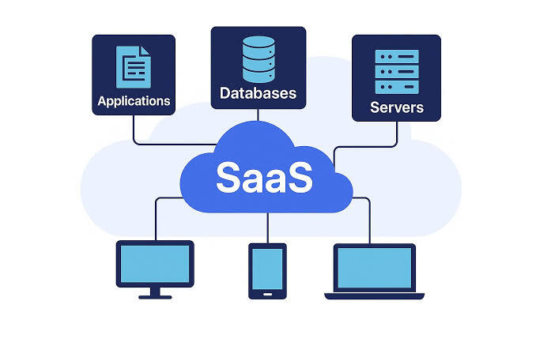
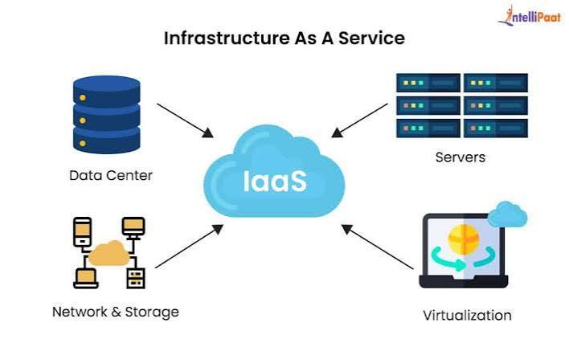

SaaS

Software as a service (SaaS /sæs/[1]) is a cloud computing service model in which a provider delivers application software to clients while managing the required physical and software resources.[2] SaaS applications are accessed via either a web application or locally-installed software. Unlike other software delivery models, SaaS separates "the possession and ownership of software from its use".[3] The use of SaaS began around 2000, and by 2023 was the main form of software application deployment. SaaS products typically run on rented infrastructure as a service (IaaS) or platform as a service (PaaS) systems, including hardware and sometimes operating systems and middleware, to accommodate rapid increases in usage while providing instant and continuous availability to customers. SaaS customers have the abstraction of limitless computing resources, while economy of scale drives down the cost.
PaaS

Platform as a service (PaaS) or application platform as a service (aPaaS) or platform-based service is a cloud computing service model where users provision, instantiate, run and manage a modular bundle of a computing platform and applications, without the complexity of building and maintaining the infrastructure associated with developing and launching application(s), and to allow developers to create, develop, and package such software bundles.
IaaS

Infrastructure as a service (IaaS) is a cloud computing service model where a cloud services vendor provides computing resources such as storage, network, servers, and virtualization (which emulates computer hardware). This service frees users from maintaining their own data center,[1] but they must install and maintain the operating system and application software.[2] IaaS provides users with high-level APIs to control details of the underlying network infrastructure, such as backup, data partitioning, scaling, security, and physical computing resources. Services can be scaled on-demand by the user. According to the Internet Engineering Task Force (IETF), such infrastructure is the most basic cloud-service model. IaaS can be hosted in a public cloud (where users share hardware, storage, and network devices), a private cloud (users do not share resources), or a hybrid cloud (combination of both).